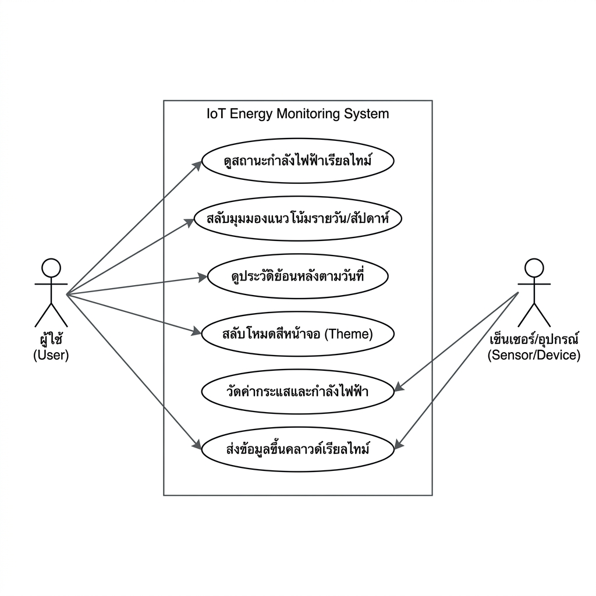
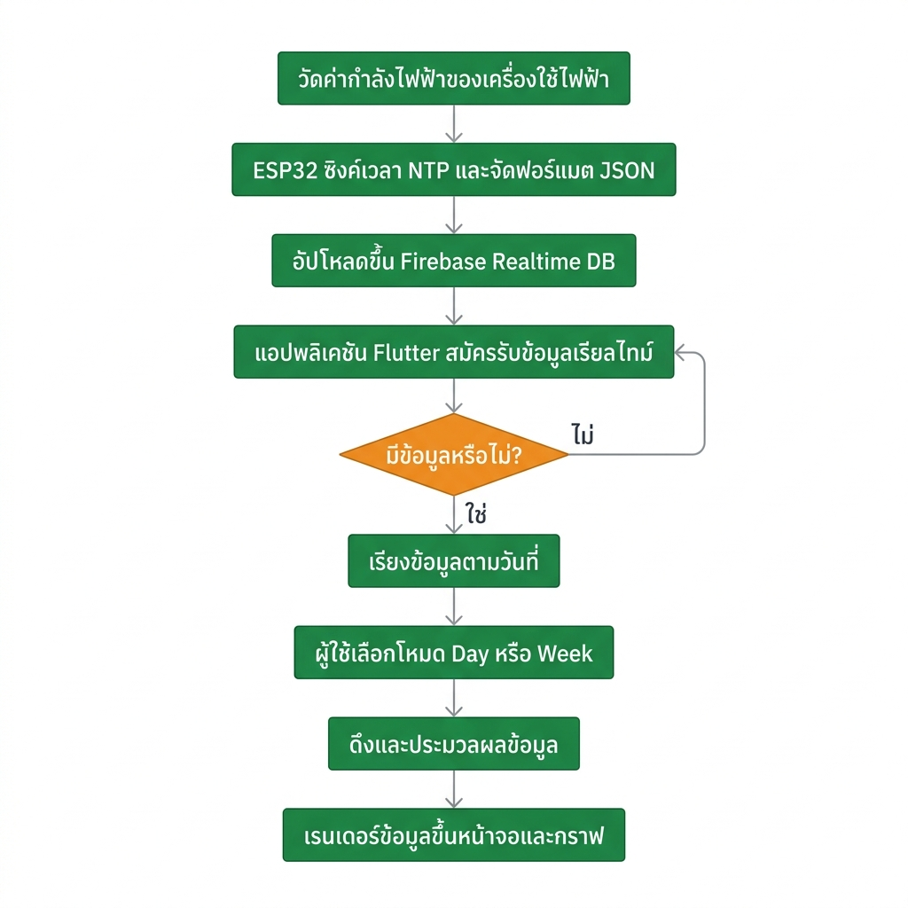

การดำเนินการวิจัยและพัฒนาระบบเริ่มต้นตั้งแต่การออกแบบส่วนฮาร์ดแวร์เพื่อตรวจวัดค่าพลังงานไฟฟ้าและจัดส่งข้อมูลขึ้นสู่ระบบคลาวด์ ตลอดจนการพัฒนาส่วนหน้าจอแสดงผลบนโมบายแอพพลิเคชันเพื่อการติดตามผลแบบเรียลไทม์ โดยแบ่งรายละเอียดการทำงานออกเป็นส่วนต่าง ๆ ดังนี้:
การตรวจวัดปริมาณกระแสไฟฟ้าและกำลังไฟฟ้าจริงจำต้องอาศัยฮาร์ดแวร์ (Hardware Core) ที่มีความแม่นยำสูง เชื่อมต่อผ่านระบบเซ็นเซอร์และการประมวลผลของไมโครคอนโทรลเลอร์ โดยมีรายละเอียดโครงสร้างอุปกรณ์ดังนี้:
| อุปกรณ์ (Component) | รุ่น / ข้อมูลจำเพาะ (Model / Specs) | บทบาทหน้าที่ในระบบ (Role in System) |
|---|---|---|
| ไมโครคอนโทรลเลอร์ (MCU) | ESP32 DevKit V1 (Tensilica 32-bit LX6, 240 MHz, SRAM 520 KB, Flash 4 MB, Wi-Fi 2.4 GHz) | เป็นสมองกลควบคุมหลัก ทำการประมวลผลข้อมูลจากเซ็นเซอร์ ดึงข้อมูลเวลาสากลจาก NTP Server และส่งข้อมูลขึ้นคลาวด์ Firebase แบบเรียลไทม์ |
| โมดูลตรวจวัดค่าไฟฟ้า (AC Power Meter) | PZEM-004T v3.0 ร่วมกับ Split-Core Current Transformer (CT) ย่านวัดสูงสุด 100A | ตรวจวัดค่าทางฟิสิกส์ไฟฟ้ากระแสสลับ (แรงดันไฟ V, กระแสไฟ A, กำลังไฟฟ้าจริง W, พลังงานสะสม Wh, ความถี่ Hz, Power Factor) สื่อสารผ่าน UART Modbus-RTU เข้าบอร์ด ESP32 |
| เซ็นเซอร์กระแสไฟ (ทางเลือก) | ACS712 (Hall-Effect Direct) หรือ SCT-013-000 (Non-invasive Current Transformer 100A) | ใช้ตรวจวัดกระแสไฟฟ้าไหลผ่านในกรณีไม่ใช้โมดูล PZEM-004T โดยส่งเอาต์พุตออกมาเป็นสัญญาณไฟฟ้าอะนาล็อก (Analog Signal) |
| โมดูลแปลงไฟเลี้ยง (Power Supply) | HLK-PM01 (AC 220V to DC 5V / 3W Switch-mode Module) | แปลงไฟฟ้ากระแสสลับจากอาคารเป็นแรงดันกระแสตรง 5V เพื่อจ่ายไฟเลี้ยงแบบแยกอิสระให้กับบอร์ด ESP32 และเซ็นเซอร์ต่าง ๆ |
การจัดส่งข้อมูลแบ่งออกเป็นขั้นตอนดังภาพไดอะแกรมด้านล่าง:
โดยมีขั้นตอนการทำงานคือ:
{"watt": 120.5, "amp": 1.25} แล้วจัดอัปโหลดขึ้น Firebase ไปยังพิกัด history/YYYY-MM-DD/HH แบบเรียลไทม์การจัดเก็บข้อมูลบนฐานข้อมูลระบบคลาวด์ของ Firebase ออกแบบโครงสร้างในลักษณะลำดับชั้น JSON Tree ภายใต้ URL หลักของโครงการ https://projectga-d3f20-default-rtdb.asia-southeast1.firebasedatabase.app/ เพื่อรองรับการสืบค้นข้อมูลตามวันเวลาและรองรับการดึงข้อมูลแบบสตรีมมิ่ง โดยมีรายละเอียดโครงสร้างข้อมูลดังนี้:
history - สารบัญหลักที่ใช้เก็บบันทึกประวัติพลังงานทั้งหมดของระบบYYYY-MM-DD (เช่น 2026-05-30, 2026-06-01) - โหนดระดับที่สองใช้รูปแบบ วันที่ปัจจุบัน คั่นด้วยเครื่องหมายลบ เพื่อแยกแยะประวัติการใช้ไฟฟ้าในแต่ละวัน ทำหน้าที่เป็นดัชนี (Index) สำหรับคัดกรองวันที่ต้องการสืบค้นย้อนหลังHH (ช่วงค่าตัวเลขระหว่าง 0 ถึง 23 เช่น 8, 10) - โหนดระดับที่สามแยกแยะเวลาเป็นรายชั่วโมง โดยตัดเลข 0 ที่อยู่ข้างหน้าออกเพื่อความกระชับของชื่อคีย์และง่ายต่อการคิวรีประมวลผลamp: ค่ากระแสไฟฟ้าเฉลี่ยในชั่วโมงนั้น (ชนิดข้อมูล: ทศนิยม Double, หน่วย: Ampere: A)watt: ค่ากำลังไฟฟ้าจริงที่ใช้งานในชั่วโมงนั้น (ชนิดข้อมูล: จำนวนเต็ม/ทศนิยม, หน่วย: Watt: W){
"history": {
"2026-05-30": {
"8": {
"amp": 5.5,
"watt": 150
},
"10": {
"amp": 4.8,
"watt": 120
}
},
"2026-06-01": {
"9": {
"amp": 6.2,
"watt": 180
}
}
}
}แผนผัง Use Case แสดงบทบาทผู้ใช้งาน (Actors) และส่วนประกอบภายในกรอบขอบข่ายการทำงานของระบบ (System Boundary) ในระดับการนำเสนอและจัดหาข้อมูล:

แผนผังขั้นตอนการทำงาน (Flowchart) ต่อไปนี้แสดงขั้นตอนการทำงานทั้งหมดของระบบ ตั้งแต่จุดเริ่มต้นฝั่งฮาร์ดแวร์ การส่งข้อมูล ตลอดจนระบบแสดงผลและการโต้ตอบในตัวแอปพลิเคชัน:

โครงสร้างหน้าจอถูกควบคุมโดยคลาส WattDashboardPage (ในไฟล์ graph_page.dart) ซึ่งเป็น StatefulWidget ทำหน้าที่เป็นผู้ประสานงานหลักในการจัดโครงสร้างหน้าและการสลับมุมมองระหว่าง หน้าหลัก (Dashboard) และ หน้าประวัติ (History List) โดยใช้โครงร่างโครงสร้างแบบชั้น (Layered Layout) ร่วมกับ Scaffold ดังนี้:
แอพพลิเคชันจะเริ่มต้นสถาปัตยกรรมผ่านฟังก์ชันหลัก main() ในไฟล์ main.dart โดยทำการเริ่มต้นการเชื่อมต่อแบบอะซิงโครนัส (Asynchronous) เข้ากับ Firebase เพื่อเตรียมความพร้อมสำหรับการทำ Data Streaming:
// โค้ดส่วนการเริ่มต้นระบบและการเชื่อมต่อกับ Firebase (main.dart)
void main() async {
WidgetsFlutterBinding.ensureInitialized();
await Firebase.initializeApp(
options: DefaultFirebaseOptions.currentPlatform,
);
runApp(const MyApp());
}ระบบใช้โครงสร้าง StreamBuilder ในคลาส _WattDashboardPageState (ในไฟล์ graph_page.dart) เพื่อสมัครรับข้อมูล (Subscribe) จากตำแหน่ง history บน Firebase Realtime Database ทำให้หน้าจอแอพพลิเคชันสามารถรีเรนเดอร์ตัวเองใหม่โดยอัตโนมัติทันทีที่มีการเปลี่ยนแปลงข้อมูลจากฝั่งฮาร์ดแวร์:
// โค้ดส่วนดึงข้อมูลประวัติและค่าเรียลไทม์จาก Firebase Realtime Database (graph_page.dart)
class _WattDashboardPageState extends State<WattDashboardPage> {
// การกำหนดตำแหน่งอ้างอิงของโฟลเดอร์ใน Database
final DatabaseReference _historyRef = FirebaseDatabase.instance.ref('history');
@override
Widget build(BuildContext context) {
return Scaffold(
backgroundColor: AppColors.bg,
body: SafeArea(
child: StreamBuilder(
stream: _historyRef.onValue, // เชื่อมโยง Stream จาก Firebase
builder: (context, snapshot) {
// เมื่อได้รับข้อมูลจาก Firebase สำเร็จ
if (snapshot.hasData && snapshot.data!.snapshot.value != null) {
final raw = snapshot.data!.snapshot.value as Map;
// ดึงคีย์ข้อมูลวันที่ทั้งหมดเพื่อแสดงผลในรายการประวัติ
availableDates = raw.keys.map((e) => e.toString()).toList();
availableDates.sort((a, b) => b.compareTo(a)); // เรียงลำดับวันล่าสุดขึ้นก่อน
// ... ขั้นตอนการคำนวณและแปลงค่ากำลังไฟฟ้าเพื่อส่งต่อไปยัง Widget อื่น ๆ ...
}
// ...
},
),
),
);
}
}ทำหน้าที่แสดงชื่อระบบและสลับสถานะสีธีมผ่านตัวแปร onToggleTheme ที่เชื่อมกับสถานะหน้าจอหลัก
แสดงค่ากำลังไฟฟ้าหลัก (วัตต์ และ แอมป์) พร้อมระบบแปลงรูปแบบการแสดงผลวันที่ที่กำลังถูกดึงข้อมูลจากค่าเริ่มต้นของเซสชันหรือค่าที่ดึงมาจากฐานข้อมูล:
// โค้ดส่วนการรับข้อมูลและแปลงแสดงผลการ์ดหลัก (power_card.dart)
class PowerCard extends StatelessWidget {
final String watt;
final String amp;
final String dateStr; // รับค่าวันที่ในรูปแบบ YYYY-MM-DD
final bool dayView;
// ...
@override
Widget build(BuildContext context) {
// การแปลงรูปแบบวันที่ YYYY-MM-DD ให้เป็นสากล D/M/Y
final parts = dateStr.split('-');
final formattedDate = parts.length == 3 ? '${parts[2]}/${parts[1]}/${parts[0]}' : dateStr;
return Container(
// ... การกำหนดสไตล์โครงสร้างการจัดวาง ...
child: Column(
children: [
Text(
dayView ? formattedDate : 'Last 7 Days', // แสดงวันที่ในฟอร์แทต D/M/Y ที่แปลงแล้ว
style: TextStyle(fontSize: 11, color: AppColors.textMuted),
),
// ... แสดงค่ากำลังไฟฟ้าและกระแสไฟฟ้า ...
],
),
);
}
}ใช้โมดูลกราฟของ fl_chart ในการแสดงแนวโน้มแบบเส้นเชื่อมความหนา 3.5 และใช้โครงร่างความโปร่งใสแบบไล่โทนสี (Gradient) แสดงผลข้อมูลได้ทั้งแบบ Day (ข้อมูลชั่วโมงต่อชั่วโมง) และ Week (ข้อมูลแบบ 7 วันล่าสุด)
มีลอจิกแปลงรูปแบบช่วงวันที่ในการแสดงบันทึกแบบแถวรายการย้อนหลังหากมองผ่านมุมมองรายสัปดาห์:
// โค้ดส่วนแยกการจัดแสดงผลวันที่กิจกรรมรายวัน (activity_logs.dart)
if (dayView) {
subStr = '${data.hour.toString().padLeft(2, '0')}:00';
} else {
final idx = data.hour;
if (idx >= 0 && idx < weekLabels.length) {
final parts = weekLabels[idx].split('-');
// แปลงรูปแบบคีย์ฐานข้อมูล YYYY-MM-DD ในแต่ละจุดแกนข้อมูลให้ออกเป็น D/M/Y
subStr = parts.length == 3 ? '${parts[2]}/${parts[1]}/${parts[0]}' : weekLabels[idx];
}
}แสดงรายการคีย์ประวัติวันที่ที่นำมาเรียงเป็นปุ่มกด โดยลอจิกการแปลงรูปแบบจะแปลงก่อนส่งเข้าวาดข้อความเพื่อความสะดวกของมนุษย์ และส่งคีย์ดั้งเดิมกลับไปประมวลผลผ่าน onDateSelected:
// โค้ดส่วนแสดงผลรายการประวัติย้อนหลัง (history_list.dart)
class HistoryList extends StatelessWidget {
final List dates;
final String? selectedDate;
final ValueChanged onDateSelected;
// ...
@override
Widget build(BuildContext context) {
return ListView.builder(
itemCount: dates.length,
itemBuilder: (context, i) {
final date = dates[i];
final isSelected = date == (selectedDate ?? (dates.isNotEmpty ? dates.first : ''));
// แยกส่วนคีย์ความปลอดภัย YYYY-MM-DD ออกเป็น D/M/Y
final parts = date.split('-');
final formattedDate = parts.length == 3 ? '${parts[2]}/${parts[1]}/${parts[0]}' : date;
return GestureDetector(
onTap: () => onDateSelected(date), // ส่งคีย์ดั้งเดิม YYYY-MM-DD กลับไปคิวรี Firebase
child: Container(
// ...
child: Text(
formattedDate, // แสดงผลวันที่ในหน้าจอเป็น D/M/Y
style: TextStyle(
// ...
),
),
),
);
},
);
}
}